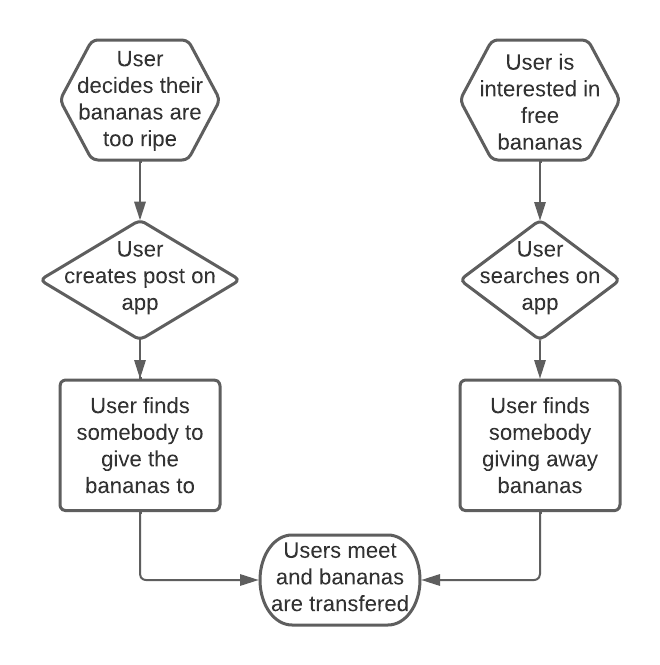
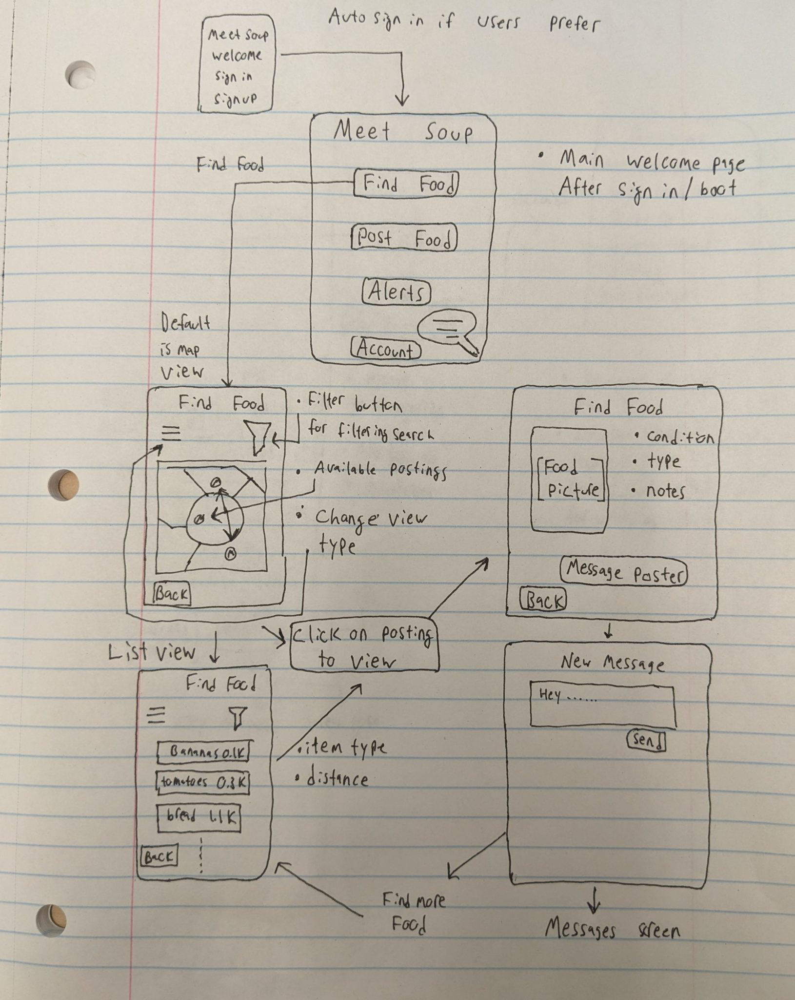
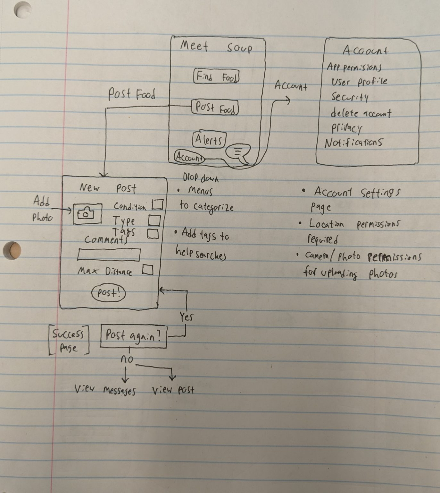
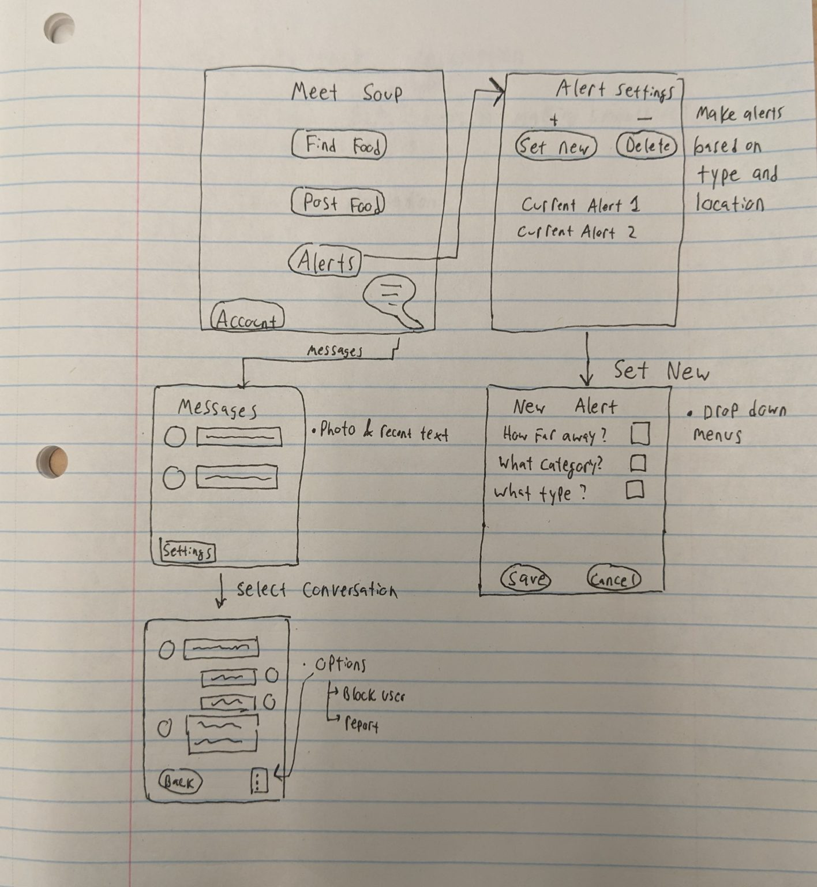
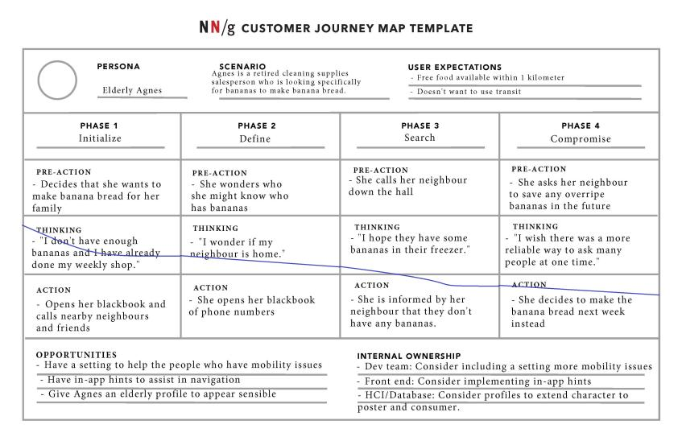
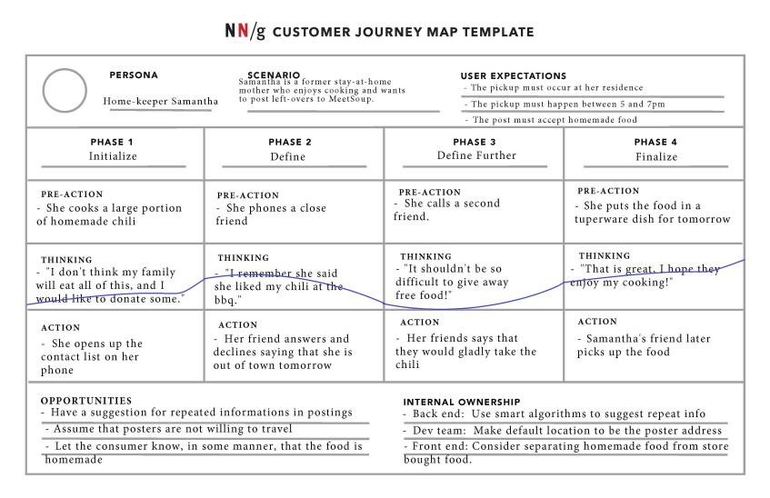
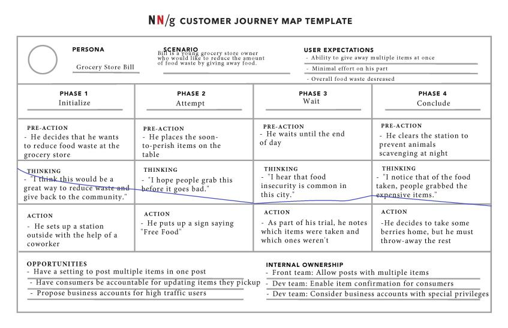
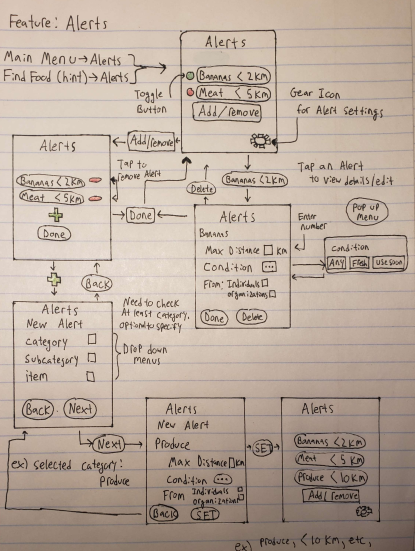
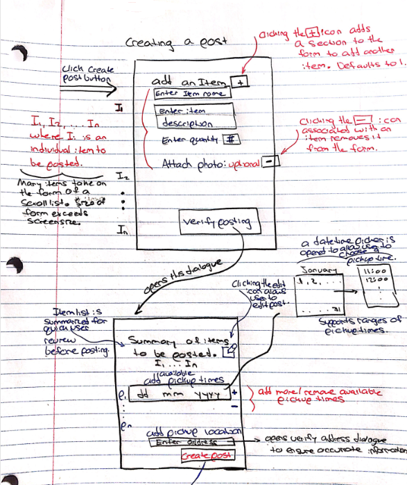
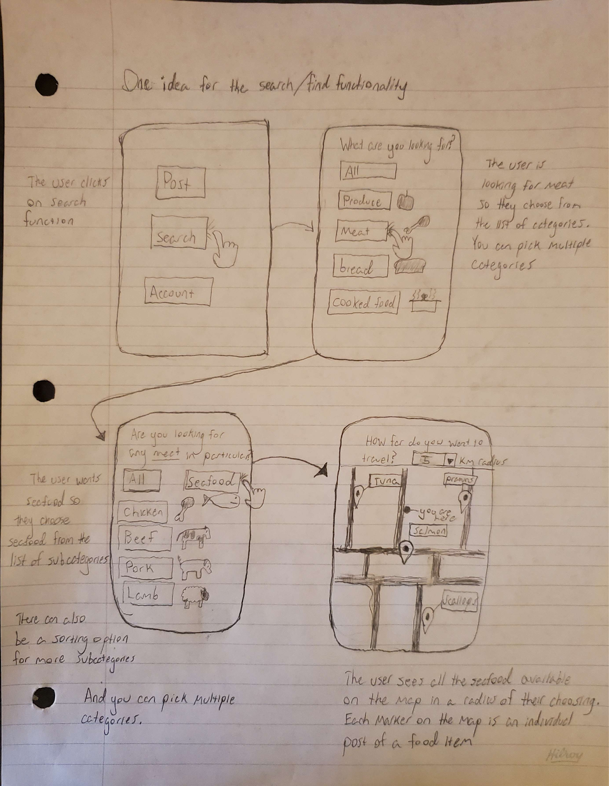

ZERJ Project
Our group name is ZERJ. We are creating an app called MeetSoup. The group members are: Jack Henker, Robert Bell, Zak Toews, Elan Jonas-McRae.
Our group name is ZERJ. We are creating an app called MeetSoup. The group members are: Jack Henker, Robert Bell, Zak Toews, Elan Jonas-McRae.
Within our society there exists an emerging issue with regard to efficient food usage [1]. There also appears to be two easily distinguishable sides to this problem that we intent to address within our project.
On one hand, we know that many people throw away food that is still acceptable to be consumed by humans. They may do this for the following reasons:
On the other hand, there are also many people who could benefit from easy access to free food. Some examples include:
A feasible way to connect these two types of people and to redirect otherwise wasted food to the people who need it does not currently exist.
The National Food Waste council determined that Canadian households bore responsibility for 2.3 million tons of food wasted in 2022 [2]. This wasted food severely harms the environment in the form of C02 emissions. Additionally, 5.1 million Canadians resided in households affected by food insecurity in 2021 [3]. The Meet Soup app holds the potential to reduce the following:
When food is wasted, it means that the resources used to produce, process, and transport that food are also wasted. Reducing food waste helps businesses and individuals avoid unnecessary expenses associated with purchasing and producing more food than necessary.
Finding ways to reduce food waste in our society will help minimize both food insecurity and greenhouse gas emissions from decomposing waste. Methods to reduce food waste are often low cost, free, or will reduce overall food costs.
We are proposing a location-based web application which allows users to make postings when they have food available that they do not need. Other users will then search through these postings and make a request to pick them up. An example of how the app could be used for an over ripe bananas is outlined in figure 1.
Figure 1 – Flowchart for 2 types of application users.
Users interested in picking up food will browse posts using a map or list-view style, with options for filtering (figure 2). Clicking on a post will show you more details and provide the option to message the poster. A poster will provide information about food being offered, along with a photo (figure 3). Users could set up alerts when certain items are available (figure 4).
Figure 2 – Sketch outline of the main menu and “Find Food” option.
Figure 3 – Sketch outline of the “Post Food” option and account page.
Figure 4 – Sketch outline of the “Alerts” and “Messages” menus.
[1] City of Edmonton, “The problem of food waste,” Change for Climate, https://changeforclimate.ca/story/the-problem-of-food-waste (accessed May 23, 2023).
[2] S. Naushad, “Food Waste in Canada,” Youth in Food Systems, https://seeds.ca/schoolfoodgardens/food-waste-in-canada-/ (accessed May 24, 2023).
[3] “How many Canadians are affected by household food insecurity?,” PROOF, https://proof.utoronto.ca/food-insecurity/how-many-canadians-are-affected-by-household-food-insecurity/ (accessed May 24, 2023).
We recruited 7 participants for our study.
Participant 1: A 33-year-old UVic biomedical engineering student. This participant can be described as such:
Participant 1 is valuable to us for two reasons. One, that university students would likely provide a large base of consumers to an app like ours. Two, we should give attention to how things such as personal details and location can compromise a person’s privacy.
Participant 2: A 23-year-old UVic software engineering student. Attributes that sum up this participant:
This participant is valuable as the “ideal” consumer. They provide us with an understanding of the best weather cases as they are physically able, possess sufficient free time, are tech-literate, and are also agreeable enough to use the potential app with no issue. They could also be used as a resource for any trials.
Participant 3: A 61-year-old former stay at home mother. This participant possesses the following characteristics:
Our team believed that this subject regularly uses applications and often uses food ingredients with a short shelf life. Participant 3 enabled our team to understand that some people prefer contact free options and do not enjoy messaging or notification features.
Participant 4: A 31-year-old special needs caregiver. This participant holds the following traits:
Participant 4 consumes almost everything she purchases and always looks for ways to save money. She allowed our team to better understand how far a frugal person is willing to travel for free food. This participant provided our team with insight into how much food is thrown away during travel.
Participant 5: A 22-year-old caretaker. This participant:
Participant 5 has valuable input when it comes to using food service systems. They also gave insight to challenges people may face when trying to find food, such as mental health and travel costs in rural areas. They also traded labor for food with their landlord, and other neighbors that produce food.
Participant 6: A 40-year-old medical records clerk. This participant:
Participant 6 gave us the perspective from somebody who lived in a previous country, where apartment buildings had food sharing pickup/drop areas for a similar purpose to our project.
Participant 7: A 25-year-old chef. This participant:
This participant is valuable because they helped us see how a restaurant could use our app to donate food instead of waste food. This helped our project goal by seeing how a commercial kitchen could use our app to donate food instead of throwing away food. Participant 7 also had good input on how our app should look.
We used two research methods for data gathering for our project.
Firstly, we conducted interviews as a method of data gathering. We wanted to do the interview because it could be a quick way of getting relevant information. Doing this method first also allowed us to hear opinions from people who are not academically attached to the project. Within this interview, we directly asked questions about wasting food, donating food, and receiving donated food. We also asked questions about what a food donation app would look like to them, and if they would use it.
To summarize the interview findings, we know people think that food scarcity is a real issue, that an app to assist finding free food is a promising solution, and that some features like alerts would benefit users who wish to enable them.
We feel that the information that we collected from the interview was helpful to our understanding of what people are looking for as a solution to food scarcity and waste on a local level.
Secondly, we utilized a diary study to collect data from participants regarding the food they wasted, and whether they donated food or received donated food. We chose the diary study as we had assumed that a catalogue of the types of the food that were being wasted, donated, or picked-up would be greatly beneficial to our research.We also asked our participants to record whether or not they would want to donate the food they wasted.
Except for the chef participant who worked in a kitchen, our participants who did the diary study didn’t waste much food, and this left us with not very much information gathered; however, the same people who admitted to wasting food at times in the interview also did not find themselves wasting any food on the chosen duration (four days) for the diary study. To improve our diary study, we could have used more people and have had a longer duration to conduct the study. We feel that people throwing away food is not an uncommon occurrence, and that a longer period would have revealed such instances eventually.
Task 1: Jorg, a student living on campus at UVIC, is very frugal and open-minded. He opens Facebook and looks to find some food that he can use for meals over the next week. He browses some of the postings on a foodshare group that he figures are within biking distance. Upon finding a posting offering potatoes, he clicks on it to learn more. The buyer bought a large bag to get a better deal, and is offering up the rest that are starting to sprout. He confirms the pickup with the poster, and heads out on his bike to pick up the potatoes.
Discussion: People like Jorg are a common demographic type for the MeetSoup platform. As a student, Jorg is likely very able to navigate through user interfaces of various platforms, as a large amount of coursework requires these abilities. Jorg might just need to supplement his pantry with an item or two, or he might like to pick up multiple items from multiple people and/or establishments.
Task 2: Agnes, a retired cleaning supplies salesperson loves to make banana bread for her family members. She has arthritis and uses a walker, so she doesn’t like to use transit or travel very far. She didn’t grow up with much when it comes to technology, but her family helps her use her cell phone. She ran out of bananas this week before her weekly visit to the grocery store. She calls her friends and neighbors and asks if they have any spare bananas, but unfortunately they don’t.
Discussion: Agnes is a great example to study as she presents us with two challenges. First, as a retiree, we assume she is older than the average population, and she may not immediately understand how to use a new user interface. She might benefit from some in-app guidance when navigating the platform. Secondly, Agnes also is affected by mobility issues, so being able to filter her search based on distance is crucial to her usage. Since she makes frequent use of one type of item, she is the perfect candidate for the alert system. She is able to set alerts specifically for bananas, and ensure that the alerts are for nearby postings.
Task 3 : Samantha, a former stay at home mother loves to cook and often purchases expensive organic ingredients. She holds a degree in biology and exhibits a passion for the environment. Samantha owns a smartphone and is well versed in utilizing it to fulfill her needs without any assistance. She cooked a large portion of chili and worries that some of it will remain unconsumed upon expiration. She phones a close friend and offers to give them the food. This friend is unavailable to pick up the food. Samantha phones a second friend who happily drives to pick up the food.
Discussion: Samantha represents a core type of user for the MeetSoup application. She purchases expensive organic ingredients that often expire quickly. Additionally, she values the environment as well as the well-being of others. These characteristics lead her to taking an initiative to donate her food rather than throwing it out. Samantha is health conscious and does not wish to come into contact with others. This requires an option for food to be placed outside for pickup.
Task 4: Bill, a young owner of a small local grocery store sources sustainable food whenever possible. He owns a phone but doesn’t use it much outside of work and struggles using technology in general. Bill, with the help of the store manager, creates a station outside the store where soon-to-perish food items are placed. Bill places all donatable food items at this station. At the end of the day, Bill retrieves unclaimed food items and disposes of them.
Discussion: Grocery stores and businesses waste much larger quantities of food than individuals. Bill holds the ability to get large quantities of food to those who need it. He possesses the following challenges: he is not particularly tech savvy and lacks time to post items individually. He is an ideal candidate for bulk donation options within the application as well as a user who requires an extremely easy to use interface.
Figure 1.1 – A journey map displaying a likely scenario with student Jorg.
Figure 1.2 – A journey map displaying a likely scenario with Elderly Agnes.
Figure 1.3 – A journey map displaying a likely scenario with home-keeper Samantha.
Figure 1.4 – A journey map displaying a likely scenario with Grocery Store Bill.
We decided to group our brainstorming ideas as specific features of the app that we are envisioning. To ensure some diversity within our ideas/sketches, we figured that we would draw up our sketches separately and come back together to discuss the different features/sketches (as opposed to verifying what our sketches should include beforehand). It was interesting to see how the interpretations of the features (before seeing the sketches) varied between the team members in the discussion. After reviewing all the sketches and features that we had individually produced, we grouped them by most important/relevant. We were able to then narrow down the initial amount of sketches to four (found below in figures 1.1-1.4).
When discussing our sketches, we discovered that simply presenting and talking about proposed features made it much more clear as to what to trim and which direction our project needs. The conversation allowed us to find redundancies where information had been entered twice, or where certain features were too broad and should be broken down further. For example, after our discussion, we decided that when a search for food with specified characteristics yields no results, the platform should offer an alert with the fields auto filled so that the user can quickly set up notifications. Also during this time we decided that establishments should have a separate type of post, with some slight differences in system operation.
This session was great for us to gather insight as we were able to decide on features and details while also having visual aids during the discussion. The most distinguishing features we offered compared to existing methods of food donation and distribution were the alert system, being able to find particular items, and map integration with a distance filter. These features will make it easier for those experiencing food insecurity to plan their routes to find items as well as minimising distances required for travel. Next time we agreed it would have been good to have this type of brainstorming session done much earlier, so conceptually we would be on the same page for these aspects of the project.
Figure 1.1 Signing-up Feature: This sketch shows the navigational steps for creating an account for MeetSoup. A person can either create a personal or business account.
Figure 1.2 Alert Setting Feature: This sketch shows navigational steps for setting an alert function from within the Alerts Menu.
Figure 1.3 Creating a post: This sketch shows the navigational steps for creating a public post in MeetSoup.
Figure 1.4 Searching for food: This sketch shows the steps required to find a public post on MeetSoup.


Our team developed a low fidelity video prototype to get a feel for what we are developing.
The video first outlines the task description. Then we are shown the main menu scheme, and the user clicks on “Find Food”. The app then displays some nearby postings on a map, as the map view is the default view. Note that the icons above the map view allow for the user to switch between view types, such as “list view” or “map view”.
The user then decided to add filters to their search by clicking the funnel icon above the map. A screen with drop down menus for the category, subcategory, item type and max distance were displayed. The user selects choices from the drop down menus, and clicks the “set” button to apply the filter.
Now that the search filters have been applied, the user is brought back to the “Find Food” screen. This search yielded no results, and the user is offered a hint. This hint is a prompt to set alerts for what the user has just searched for.
The user is taken to the alert creation screen with the fields autofilled. The user reviews this, and once again clicks the “set” button. The platform then displays the alerts menu, and the newly added alert is visible. Note the green icon next to the alert. This allows for users to toggle alerts, opposed to only being able to create or delete them.
Our team identified the following visibility of system status issues within the prototype:
The prototype currently informs the user where they are in the form of a title. This provides some insight to the user but fails to show the user exactly where they are in the interface in relation to other features. This issue persists throughout the entire application but the severity remains low. As such our team believes this constitutes a minor usability problem.
The interface provides no feedback to the user upon the clicking of the ‘set’ button. If a notification fails to be set due to an error, the user will not be informed of this. If the user previously set a large amount of notifications, they must scroll through and check to see if the new notification occurs in the list of notifications.
There is a discrepancy between the system and the real world as seen in the mode setting on the Find Food menu where both views are available to the user. The modes are List View and Map View, and both provide a useful interface to the user; however, it is not clear from the buttons themselves which mode the user is in currently. It could be considered collapsing the two modes into one and displaying both views simultaneously, or deciding on one of the two modes. If one of the views were to be chosen, then the Map View should be preferred due to its visual aspects.
Because there is no functionality impacted, but only a minor potential for confusion, we rated this as a minor usability problem.
The following problems exist in the interface that limit user control and freedom:
No features currently exist that allow users who experienced a slip or mistake to return to the home screen immediately. This persistent issue constitutes a major usability problem and must be addressed.
If a user wishes to return to the previous step at any point, they must find the back button located on the bottom left. If the current page involves large amounts of data and the display is sufficiently large, this button may be hidden until the user scrolls to the bottom. This is a minor usability problem and need not be addressed immediately. A more complete navbar may eliminate both these issues with minimal cost.
Our team identified the following minor usability problems involving consistency and standard:
The filter icon functions as a search feature within the application. In this interface, the user is intended to search for food. Therefore the possibility exists that certain users will not know how to interact with this feature. While frequently occurring, our team believes that users should be able to ascertain how to use this with trial and error and as such it is not a high priority to fix.
The usage of a set button for searching for food is unclear. This button is first used for searching for food nearby and then later used for setting notifications. These vastly different uses may confuse some users. This problem occurs only once and does not result in a severe impact to the interface. Our team believes this problem need not be addressed immediately.
The prototype lacks proper error prevention measures in the search functionality of the interface. Users who press the ‘set’ button to search for food may encounter undefined behaviour if they fail to input all fields. This issue occurs only once in the interface but may severely impact the user experience. This constitutes a usability catastrophe and must be addressed immediately.
When the user was prompted to use the “create alert” feature after a search yielded no results, the properties of the search were copied over automatically onto the alert screen. This lets the user quickly make an alert without entering information twice.
The notification setting feature lacks customizability for users with distinct preferences. Certain users may desire notifications containing banners and sound while others may prefer no sound for example. Some users may wish for notifications to only occur during certain hours of the day to avoid interruptions. This primarily hinders experienced and highly specific users and constitutes a minor usability problem.
Our team identified the following issues within the application pertaining to aesthetics:
When a user clicks the button labelled ‘yes’ and chooses to set a notification they are then shown the same information as the previous page. This information is redundant as the user already knows what food they wish to receive notifications for. This issue occurs once and results in no major usability issues for the user.
Users searching for food may encounter an overwhelmingly large number of items to scroll through before finding the item they desire. Consider a user who searches for ‘zucchini’ but must first scroll through all types of products alphabetically. Our team considers this a severe issue due to its’ potentially severe impact on interface usability.
The “back” button allowed the user to go back, but this was not demonstrated in the video. No other hints were displayed as the user operated the interface without any snags. Future thought would need to be implemented for users using the system incorrectly, such as adding error messages or other hints when menu navigation is attempted without the prerequisite information.
The video prototype did not involve any tutorial, so it was assumed that users would intuitively figure out the UI, or the user was already familiar with the app. The user was offered a hint when a search yielding no results offered the user to utilise the alerts feature. A tutorial should be offered.
The user evaluation should provide insight into the following areas:
The interface must possess a high level of discoverability. The interface should allow users to to successfully and easily interact with all features and complete the provided task. In the previous prototype iteration, major usability issues existed concerning user control and freedom as well as error handling. Our team must determine if the design of the interface makes it easy for users to navigate freely around the application without any options being hidden or lacking. Our team must also determine if the interface provides enough help resources for users that become stuck while completing the task. The usability study should provide insight into how error prone the application is and whether or not these errors are easy to recover from. Finally, we hope to learn if users believed the interface struck a balance between being flexible and efficient to use while still maintaining a clean and minimalist design. Our team hopes that gathering this information will allow us to improve the interface design to better match the requirements of the user.
Our team plans to conduct the following research methods:
The usability test focuses on how real users interact with the interface. It is suitable for discovering issues within our interface. Our team believes the usability study will help us to better understand user preferences which will lead to enhanced user experiences moving forward. We believe that by observing users while they complete a task, we will be able to determine if some of the major heuristic issues identified in our low fidelity prototype were resolved. Additionally, we hope to learn if any heuristic issues exist that were not previously identified.
The interview is an opportunity for our team to gain valuable insight and delve deeper into specific areas. Follow up questions may help our team learn more about the user’ thought process and emotions regarding the interface. We believe the interview will prove valuable in finding some areas to work on that would improve the user’s overall experiences further.
Our team plans to recruit 6-9 participants from as diverse a background as possible. Specifically, all study participants should own a smartphone and regularly interact with interfaces. They also must all be at least 18 years of age. The user evaluation will be split into 2 iterations, and half the participants will participate in the first iteration. Based on the collected data, the interface will undergo improvements. After the interface undergoes modifications and improvements, research is conducted on the second group of participants. This iterative process will allow our team to achieve our goal of improving the interface rather than just documenting its issues.
The following steps will occur in the user evaluation:
The participant is reminded that they will engage in 20 minutes of usability testing and a 10 minute interview. The participant is told to find a way to use the interface to post a food item. The task is intentionally explained in a broad way in order to avoid giving away any information or introducing any biases into the procedure. By asking the participant to think out loud, the researcher gains the ability to understand why the participant is engaging the interface in the manner they are. The participant begins attempting to complete the task and the researcher only provides assistance should the participant remain stuck for more than 2 minutes. The researcher records everything the participant says and does throughout the procedure. By having the participant return to the task a second time after the interview, the researcher may learn valuable information regarding recognition and recall.
The interview involves the following questions administered using an open ended approach:
The interview is expected to take 10 minutes and the researcher should ask follow up questions whenever necessary.
Our team anticipates that the following problems could occur while conducting the user evaluation:
We are hopeful that no bugs exist with the Figma software we are using to develop the prototype. Ideally the linking between pages will function correctly and the smaller features within each page such as drop down menus will also behave correctly. However, the possibility of these bugs existing remains.
Our team also anticipates possible problems with the photo selection feature of the post food feature in our prototype. The user may think that the prototype should open a camera or their photo gallery but this prototype won’t have the ability to access other apps on the device. This could lead to confusion and a reduction in usability satisfaction amongst the participants.
While our team is hopeful that no bugs exist within the Figma prototype, we plan to reduce the likelihood of bugs occurring further by conducting a pilot study. By testing the prototype ourselves before conducting the study, we plan to eliminate as many bugs as possible. This also allows our team to understand how the linking between pages looks and whether any small issues exist regarding drop-down menus or other small features. Finally, by putting as much time and resources as possible into implementing the prototype initially, we hope to minimize bugs and major usability issues that could result in catastrophe during the user testing.
The photo selection feature does not have access to the user’ camera or photo library as it is a medium fidelity prototype and not a finished application in production. Informing participants initially of the prototype’ limitations will help avoid this problem from occurring. The researcher informs the participant that they must select one of the provided photos rather than selecting their own.
The data collected throughout the user evaluation and interview will consist mostly of qualitative data with a small amount of quantitative data mixed in. We anticipate learning about the participants’ thoughts and emotions regarding the interface. The user evaluation will provide insight into the participants’ experiences using the interface. If any major usability issues exist, these should present themselves in the usability study.
The interview provides additional qualitative data that should expose any heuristic issues missed through the user evaluation. Our team specifically formed the questions in order to understand if the heuristic issues identified during the low fidelity prototyping phase still exist, or if they have been resolved. The interview also provides a small amount of quantitative data regarding the levels of user satisfaction amongst different features of the application on a scale between 1 and 10 where 10 represents maximum satisfaction. This data allows for quick analysis as well as easy comparison to occur between various participants. The data from the user evaluation and interview should allow our team to determine which parts of the interface still need improvements or modifications.
For our medium fidelity prototype, we decided to go with a vertical prototype. A vertical prototype is one that focuses on few features but with large functionality. With our prototype, we were able to display a full task of posting an item on MeetSoup from the homepage to post completion. To create the mock interface, which allows users to simulate making decisions and interacting with our GUI, we used Figma which is a web-based, collaborative interface design tool.
We were able to improve on many functionalities from our low-fidelity prototype. With regard to User Control, we added a home button to all screens, as well, we ensured that a back button was always visible to the user. With regard to Visibility, the relation between the screens is now visible. For the Aesthetic, we also further simplified the amount of options displayed on a screen at a given time.
Visually, we made a massive improvement by switching from a paper copy of a low-fidelity prototype to a digital copy of a GUI with many clean and standardized options for displaying components.
We have many design requirements, and not all of them can be displayed with the one prototype task we chose of ‘Posting an Item’ (specifically, as a user and not as an establishment). However, we were still able to address several important requirements that we had set out for ourselves. Below we describe how we addressed two of our primary features, and one of our secondary features.
– Post Functionality – The entire task as seen in our vertical prototype covers the Post Functionality and several sub-features that it encompasses. As can be seen in our prototype, a user, in a relatively clear and concise manner, is able to post a food item available for public viewing and eventual pick-up.
– Scheduling – The scheduling feature can be seen as part of the Post Functionality. After selecting the food item and image to represent the item, the user can choose the dates on an intuitive calendar view. After the user selects the date/s, they can then choose the specific time they are available for pick-up for the date/s selected prior. The rolodex view provides constraint and therefore simplicity for the user as they do not need to consider formatting.
– Confirmations – An example of confirmations is also present in the Post Functionality. After the user has viewed the summary of the post they would like to submit, they click Create Post. After, a page is displayed that says “Success!” and summarizes the post information.
For the pilot test, we invited a classmate to evaluate our application without providing specific instructions. Being familiar with our class and technology in general, they comprehensively navigated through the prototype and thoroughly tested all the functionality and options.
Our subject noted it was apparent to them that the task we planned to evaluate was “posting food”, based on the prototype’s content.
They also noted the following points during the pilot test:
We refined our task description to include the following specifications:
Table 1. Participant information
| Participant Number | Age | Occupation |
|---|---|---|
| 1 | 33 | Biomedical Engineering Student |
| 2 | 23 | Software Engineering Student |
| 3 | 29 | Software Developer |
| 4 | 28 | IT Technician |
| 5 | 40 | Medical Records Clerk |
| 6 | 25 | Chef |

Figure 1. A participant using the prototype
Our team retrieved quantitative data in the following areas:
Figure 3. Quantitative data boxplot
The photo uploader box plot shown on the left of Figure 3 displays the participants’ user experiences using the photo uploader feature. Our team obtained a median value of 6.5 with a max value of 10 and a minimum value of 2. This data indicates that participants were moderately satisfied with the photo uploader feature. A small number of participants were either extremely satisfied or extremely unsatisfied with the feature but these participants are not considered outliers.
The date and time picker feature received a median value of 5 with a maximum value of 9 and a minimum value of 2. While some participants were extremely dissatisfied with the feature, the data indicates that most values fell between 5 and 7. Most participants indicated a neutral to positive experience using this feature.
The location feature received a median value of 9.5 with a minimum value of 5 and a maximum value of 10. The vast majority of participants described a high degree of satisfaction with this feature while a few participants were neutral. This data indicates that participants described a higher level of user satisfaction with this feature compared to all other features that they interacted with.
Participants overall described a high level of satisfaction with the posting feature as a whole. This is confirmed by the overall posting feature box plot shown in figure 3 which indicates a median value of 7.5. An outlying user provided a satisfaction level of 10 but this value falls drastically higher than all the other satisfaction levels.
A median value of 120 seconds and a mean of 112 seconds for task completion time indicate that the vast majority of users took approximately 2 minutes to successfully complete the task. No outliers occurred as indicated by the close proximity that the median and mean fall to each other. Users completed the task relatively quickly and encountered few issues that resulted in major time delays.
Misclicks occurred infrequently throughout the user evaluation. A median value of 1 misclick indicates that users were easily able to determine where to click. One outlying user misclicked 4 times throughout the user evaluation. The mean therefore falls slightly higher at 1.5.
For the qualitative analysis, we gathered opinions from the participants of the evaluation. With these opinions, we refined the information into keyword/keyphrase codes that expressed the overall opinion of the statements. We then organized the codes into categories and identified trends in the data.
Users indicated a high level of satisfaction in the areas shown in Table 2.
Table 2. Codes corresponding to positive points in our prototype
| Likes |
|---|
| Clear Buttons |
| Page Navigation |
| Logical and Natural Flow |
| Minimalist Design |
| Clear Phrasing Throughout |
| Easy to Pick Food |
| Nice Drop-Down Menus |
| Liked the House Image for the Home Menu |
| User Friendly |
Figure 4. Pie chart showing the frequency of codes in Table 2
.png)
Figure 5. Venn diagram showing how the qualitative codes were organized into negative comments, restrictions due to prototype, and the intersection between the two of them.
Most participants expressed a high degree of satisfaction with our prototype but a few participants expected a fully functioning application rather than a prototype. These participants were disappointed due to the lack of information provided to them about what state the prototype is currently in. Though some participants gave poor user experience ratings on some of the features, all participants found the posting feature as a whole easy to use. Our team identified areas of improvement as shown in Figure 3. Some areas are caused by restrictions that cannot be resolved by a medium fidelity prototype. These areas will improve once the app moves towards the high fidelity stage.
Several features of our prototype were well received as shown in Figure 4. Notably, the users liked the navigation, minimalist design, and overall ease of use.
The Venn diagram shown in Figure 5 depicts the intersection between prototyping restrictions and user complaints. The diagram assisted our team in determining the validity of the negative feedback. Although we knew that some comments were related to prototyping restrictions, we recorded all information in order to keep our study free of bias. For this step, we took the codes that we thought belonged in each group and placed them in the Venn diagram.
Our team made the following conclusions based on this code grouping:
We concluded that we should ensure that future iterations emphasize the usability of the date and time picker. Users reported they would like to have the ability to choose exact time slots, while also allowing them to select different times when multiple days are selected.
Our team must also address the “unclear photo selection” which refers to how some users weren’t 100% certain of what the photo selection screen represented. We must add more information to the photo gallery and photo-selection screen. We also received a complaint about the color palette which is not restricted by the Figma software, but this opinion only came from one participant and goes against the opinions of the team. Our team will not consider recolouring the interface until later in the design process when we have feedback from more users.
Since the participants knew us personally, we expected some bias. The users may have stated that our features work adequately while actually thinking they could be improved, thus providing falsely high ratings. Having independent reviewers conduct the study would help to promote responses free of bias.
At the beginning of the user evaluation, this bias was an expected problem. As we carried out the user evaluations, the participants seemed fairly honest about how they viewed our application. However, there were some outlying numbers. We expected that, with the rating of the features, there may be outlying numbers which could skew the data. There was a participant who rated some features significantly lower than the rest of the participants, contrary to our assumptions.
Another limitation of our study is that only one linear task was available for the participant to carry out. We don’t know enough about how a user would feel about the entire application we designed because the users were only able to view one feature within the interface.
Some of the participants didn’t understand that the application they were asked to use was a medium-fidelity prototype of an application in development. Some participants were expecting an interface with a higher degree of functionality. This could have caused the ratings of the application to be worse than they might otherwise have been.
The demographics in our study were not particularly diverse. Most participants had technical backgrounds and were of a similar age range. Conducting the research with a larger and more diverse group of participants would have provided our team with feedback from more perspectives. This would’ve helped in ensuring inclusivity while also minimizing blind spots in the design.